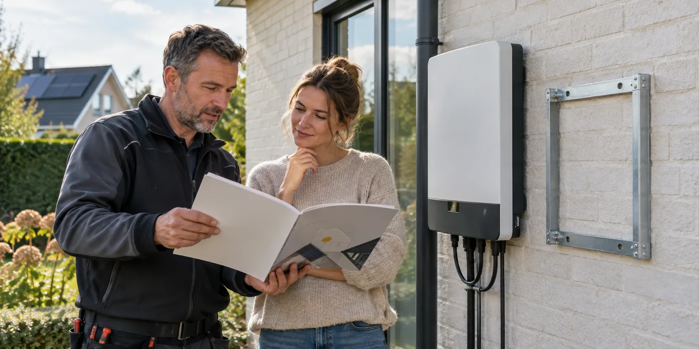

Laat de voorbereiding benoemen
Vraag welk toestel of welke voorziening de toekomstige uitbreiding mogelijk maakt. Staat er al geschikte apparatuur, is alleen ruimte gereserveerd of gaat het om een softwareoptie? Laat de installatie van vandaag apart beschrijven. Dan kun je beoordelen of de meerprijs nu aansluit op je werkelijke plannen.
Vraag naar voorwaarden en grenzen
Compatibiliteit kan afhangen van model, software, aansluitvermogen en toekomstige apparatuur. Vraag welke combinaties nu ondersteund worden en welke informatie slechts een verwachting is. Laat garanties niet ontstaan uit een algemene productterm. Een toekomstige aankoop verdient later nog steeds een nieuwe technische beoordeling.

Houd wijzigingen traceerbaar
Als je de installatie uitbreidt, moet het dossier mee veranderen. Fluvius beschrijft het melden van wijzigingen aan zonnepanelen. Bewaar daarom het oorspronkelijke plan en laat latere aanpassingen benoemen. Een goed toekomstplan zegt ook wie je opnieuw moet contacteren en welke onderdelen bij uitbreiding nog niet inbegrepen zijn.
Vraag een prijs voor de voorbereiding zelf
Laat benoemen wat het kost om een optie vandaag voor te bereiden en welke aankoop later nog volgt. Vergelijk dat met de variant zonder voorbereiding. Zo zie je of je voor concrete bruikbare onderdelen betaalt of voor een verwachting. Vraag ook welke informatie de fabrikant op dit moment bevestigt. Bewaar modelnummers en ondersteunde combinaties bij de offerte, want een algemene productnaam blijft dezelfde terwijl voorwaarden of leverbare onderdelen kunnen wijzigen.
Een toekomstlabel is nog geen werkomschrijving
Woorden als voorbereid of uitbreidbaar kunnen heel verschillende onderdelen beschrijven. Misschien is er alleen ruimte vrijgelaten, misschien staat er apparatuur die een concrete combinatie ondersteunt. Vraag welke situatie op jouw offerte van toepassing is. Laat de huidige levering en de toekomstige opdracht apart omschrijven. Een optie is pas vergelijkbaar als je weet wat ze vandaag oplevert. Dat voorkomt dat een beperkte voorziening dezelfde waarde krijgt als een volledig ontworpen uitbreiding. Vraag ook welke fabrikantdocumentatie de genoemde mogelijkheid ondersteunt en welke zaken de installateur later opnieuw zal moeten beoordelen.
Vergelijk voorbereiding met uitstel
Laat een variant met en zonder voorbereiding offreren. Vraag welke werkzaamheden later extra zouden ontstaan als je vandaag niet voorbereidt. Een kleine voorziening tijdens renovatie kan praktisch zijn, maar de nuttigheid hangt af van je werkelijke plan. Als merk, capaciteit of installatiedatum nog volledig open zijn, bespreek dan welke voorbereiding voldoende flexibel is en welke keuze je juist op één systeem vastlegt. Je hoeft niet iedere toekomstige aankoop nu te beslissen. Een goed gesprek maakt zichtbaar welke investering vandaag een concreet voordeel biedt en welke vooral op een onzekere latere wens steunt.
Vraag een lijst van voorwaarden voor uitbreiding
Laat concrete modellen en ondersteunde combinaties benoemen wanneer de toekomstige mogelijkheid een belangrijke verkoopreden is. Vraag welke software, extra meting of elektrische aanpassing later nog nodig is. Geef aan als je ook een laadpaal of warmtepomp overweegt, maar laat die plannen als afzonderlijke variant beoordelen. Een opsomming van mogelijke apparaten is niet automatisch een ontwerp voor gelijktijdig gebruik. Bewaar de documentversie bij de offerte. Een productreeks kan later veranderen; de informatie die vandaag je beslissing ondersteunt, moet daarom terugvindbaar zijn als je de uitbreiding werkelijk laat uitvoeren.
Maak een logisch vervolgmoment
Spreek af welke gegevens een installateur nodig heeft wanneer je later terugkomt. Denk aan het uitgevoerde legplan, actuele schema’s en de identificatie van apparatuur. Laat bepalen welke veranderingen aan de woning een nieuwe beoordeling vragen. Ook je verbruik kan anders zijn dan tijdens het eerste advies. Daarmee wordt het toekomstplan een route naar een volgende beslissing, niet een belofte dat alle latere keuzes zonder aanpassing passen. Bij de uitbreiding moet ook de administratie kloppen. Fluvius vermeldt veranderingen aan de zonnepaneleninstallatie als situaties die gemeld moeten worden; bespreek de concrete opvolging bij de nieuwe opdracht.
Wat moet je bij de huidige oplevering ontvangen?
Vraag een korte beschrijving van de voorbereide onderdelen en waar ze zich bevinden. Bewaar foto’s van voorzieningen die na afwerking niet zichtbaar blijven. Laat onderscheiden wat getest of in gebruik is en wat alleen voor later voorzien werd. Zo wordt een lege plek, buis of ondersteunde optie niet verward met een volledig werkende uitbreiding. Een volgende installateur moet de voorbereiding kunnen herkennen en beoordelen. Als iets niet volgens het oorspronkelijke plan uitgevoerd is, vraag een aangepast document. De toekomstige beslissing moet kunnen vertrekken van wat daadwerkelijk in de woning aanwezig is.
Praktische vergelijking
| Voorbereiding | Vandaag geleverd? | Later nog nodig? |
|---|---|---|
| Ruimte | Locatie en bereikbaarheid | Apparatuurkeuze |
| Apparatuur | Concrete compatibiliteit | Nieuwe beoordeling |
| Route of voorziening | Uitvoering vastgelegd | Elektrisch ontwerp |
| Administratie | Huidig dossier | Wijzigingen bij uitbreiding |
Een praktisch voorbeeld
Een hybride omvormer staat op de offerte, maar de batterij niet. Vraag welke latere batterijmodellen worden ondersteund en welke werken nog volgen. Het woord hybride vertelt nog niet de totale uitbreidingsprijs.
Illustratief scenario, geen klantcase.
Neem dit mee naar je gesprek
- Wat is vandaag daadwerkelijk geleverd?
- Welke modellen zijn compatibel?
- Welke extra werken volgen later?
- Wie past schema’s en meldingen aan?
Veelgestelde vraag
Garandeert batterij-ready elke toekomstige batterij?
Nee. Vraag ondersteuning voor concrete modellen en laat de voorwaarden vastleggen.
Bron en achtergrond
Fluvius: officiële of technische achtergrond bij dit onderwerp ↗
Geraadpleegd op 13 oktober 2026. De praktische checklist en het voorbeeld zijn redactionele uitwerkingen. Fabrikantinformatie geldt voor de beschreven producten; ze is geen algemene garantie voor andere systemen.
Wat betekent dit voor jouw woning?
Gebruik de calculator voor een eerste indicatie. Een vakman beoordeelt jouw situatie en bevestigt de uitvoering en definitieve prijs.
Bekijk de zonnepanelencalculator →